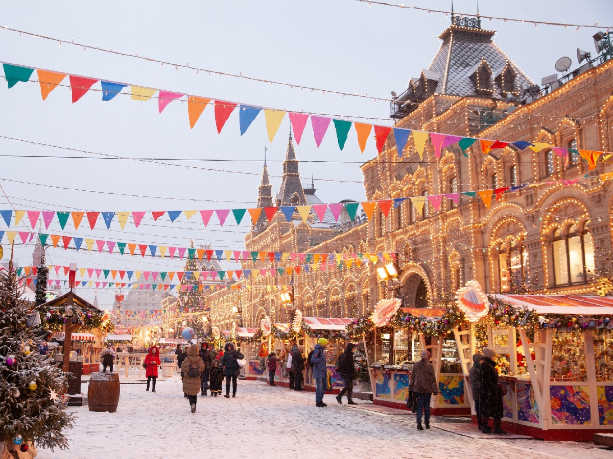

Посещение рождественской ярмарки
Наступает время сказок и ожидания волшебства!
Традиции празднования в каждой стране разные, но одно остается неизменным: в любом городе можно найти многолюдный праздничный базар.

10 лучших рождественских ярмарок России